Разное
Образец, узор -- (das) Muster [м'устэр].
Формуляр -- (das) Formular [формул'ар].
Формуляр -- (das) Formular [формул'ар].
Одна из знаменитостей в мире тех, кто только начинает жизнь
в Германии -- Эрика Мустерман, вымышленный персонаж, фото и
данные которой часто используют во всяких документах, для примера;
на образцах, изображающих заполненный формуляр, и так далее.
Эта фамилия и означает в переводе с немецкого что-то вроде
"человек-пример" (отличная идея для киноцикла: если есть человек-паук,
почему не быть человеку-примеру). Человек -- Mann,
пример, образец -- Muster. Muster на ткани -- это узор, Musterschüler -- образцовый ученик,
а "Muster ohne Wert" ("образец без ценности") раньше писали на почтовых
бандеролях с товарными пробами.

Загранпаспорт Эрики Мустерман
Военный смотр -- (die) Musterung [м'устэрунг].
Осматривать -- mustern [м'устэрн].
Осматривать -- mustern [м'устэрн].
У этого слова есть более воинственный родственник: Musterung --
изначально военный смотр, осмотр новобранцев на плацу. Узнали?
Правильно, "муштровать" и вообще "муштра".
Слово пришло в немецкий из итальянского mostra, "показ,
выставка" (от mostrare, "показывать"), а оно -- от латинского monstrare,
"показывать, указывать".
Из той же латинской семьи -- знакомые русские слова. "Демонстрация" --
от demonstrare, "наглядно показывать". По-немецки: demonstrieren.
"Монстр" -- от латинского monstrum, что означало "знамение, чудо",
буквально "явленное, показанное" (в назидание ☝️).
Что это за словечко у нас там пролетело -- на плацу?
Место, площадь -- (der) Platz [плац].
Плоский -- flach [флах].
Плоский -- flach [флах].
"Плац" -- это немецкое (der) Platz, "место, площадь".
В немецком слово заимствовано из латинского platea, "широкая
улица, открытое место", а то -- из греческого plateia, "широкая",
от platys, "широкий, плоский". Тем же путем слово разошлось по всей
Европе: французское place, итальянское piazza, испанское plaza,
английские place и plaza -- все это одна и та же греческая
"широкая улица".

Самая знаменитая площадь Германии с уютным советским душком: Александрплац в Берлине
У заимствованного из-за границы "плаца" в русском есть и исконный двойник:
"площадь". И греческое platys, и русский "плоский", "плашмя", "площадь" идут от одной
основы. Она же дала немецкое flach (плоский) и английское flat.
Так что плац и площадь -- дальняя родня.
Русский "плацкарт" -- это немецкая Platzkarte,
буквально "карточка на место" (Platz -- не только "площадь", но и "место").
Покупая поездку на немецком поезде, и в наши дни
можно бронировать или не бронировать сидячее место; примерно сто лет назад система
была такая же, но на все типы вагонов: покупаешь право на проезд в таком-то поезде,
а довеском можно и билет на конкретное место докупить -- "плацкарту". Не купишь -- спи,
где место найдешь.
Со временем многим типам вагонов нашлось короткое название -- "купе", "общий" -- а спальным
вагонам с забронированным местом досталось "плацкартный".

Раз речь зашла про поезда -- откуда взялся "вагон"?
Повозка, машина -- (der) Wagen [в'аген].
Путь, дорога -- (der) Weg [век].
Двигать -- bewegen [бев'еген].
Путь, дорога -- (der) Weg [век].
Двигать -- bewegen [бев'еген].
"Вагон" пришел к нам с железной дорогой в девятнадцатом веке --
то ли прямо из немецкого Wagen, то ли через французское wagon
(которое и само в конечном счете германское). Wagen по-немецки --
это любая повозка, а в наши дни еще и автомобиль: Volkswagen
буквально "народная машина", Lastwagen -- грузовик ("грузовая
повозка"), Krankenwagen -- машина скорой помощи ("повозка для больных"),
Kinderwagen -- детская коляска.
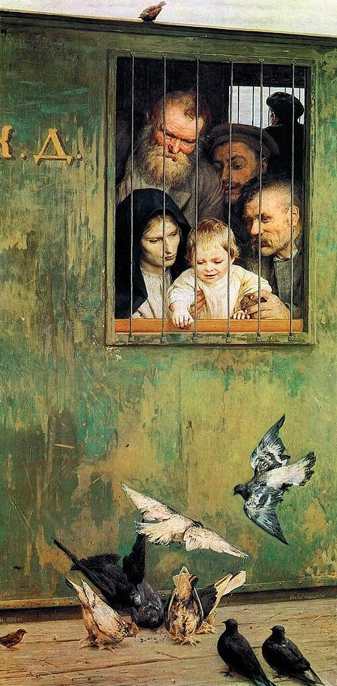
Volkswagen по версии Р.Ж.Д.
И тут снова знакомая история: "вагон" мы одолжили на Западе, хотя
исконный родственник Wagen у нас был все это время. И Wagen,
и Weg ("путь"), и bewegen ("двигать") восходят к праиндоевропейскому
корню *weǵʰ-, "везти, перемещать" -- тому же, от которого напрямую
идут русские "везти", "воз", "возить". Латинские veho, "везу"
(отсюда "вектор"), и via, "дорога", -- оттуда же. Русский "воз" вполне
описывается современным и таким многозначным словом Wagen.
Получается, "Вагон" и "воз" -- дальняя родня.
Недалекий от "вагона" "вокзал" сюда не относится совсем:
оно от названия лондонского увеселительного сада Vauxhall.
Теплый -- warm [варм].
Варить -- kochen ['кохэн].
Повар -- (der) Koch [кох].
Кухня -- (die) Küche ['кюхэ].
Готовить -- garen ['гарэн].
Варить -- kochen ['кохэн].
Повар -- (der) Koch [кох].
Кухня -- (die) Küche ['кюхэ].
Готовить -- garen ['гарэн].
Поговорим про готовку, приготовление пищи то есть.
"Варить" по-немецки -- kochen. Забавно, что слово "повар" по-русски
обозначает того, кто варит -- и точно так же по-немецки: повар --
(der) Koch.
"Варить" идёт от корня *wer-, и по одной из версий
от него же немецкой "warm" -- тёплый. То есть теплый -- это
типа вареный.
Есть и другая версия: что warm идет от *gʷʰer- -- от которого
"гореть", "горячий", "жар", "гарь", "угар" и прочее.
Какая из двух
версий верна, спорят до сих пор, но для памяти хороши обе: warm --
либо "вареное", либо "горячее".
Подбираем остаточки этой темы. Повар -- Koch -- знакомо нам
из "Острова сокровищ": корабельный повар по-русски "кок",
пришло от голландского kok, оно же немецкое Koch.
Оттуда же наша "кухня" (чтобы быть точным: от латинского coquere, "варить", от которого
и kochen; кухня через латинское же coquīna). Как кухня по-немецки? (Die) Küche.
Наша цепочка сверху -- "гореть", "горячий", "жар", "гарь", "угар" и прочее --
напоминает мне про немецкий глагол "garen": "готовить". Только вот он формально
как раз ни с чем из этого не связан. Но запоминать просто: "Was lange gart, wird extra zart"
-- "Что долго жарили, то экстра нежное". (На самом деле нет: оно уже в твердые угли превратилось.
"Gart" здесь на самом деле про тушение или медленное запекание, вот тогда получится нежным.)
Эта фраза -- переиначенная
немецкая поговорка "Was lange währt, wird endlich gut": дословно "что длится долго, то дает хороший результат".
А если вольнее и художественнее: "Терпенье и труд всё перетрут".
Эту фразу полагается произносить,
когда после пары месяцев оббивания порогов немецких ведомств собраны все документы.
Дверь -- (die) Tür [тюр].
Ворота -- (das) Tor [тор].
Ворота -- (das) Tor [тор].
"Дверь" и Tür -- родня по прямой линии, оба восходят к
праиндоевропейскому корню *dʰwer-, "дверь, проем". У обоих
слов есть по родственнику внутри собственного языка.
По-немецки это Tor, "ворота": Tür и Tor когда-то были одним и тем же
словом, просто в разных числах: ворота -- это просто две двери; много
позже единственное и множественное число разошлись по смыслу и стали
разными словами.
По-русски похожая история случилась со словом "двор": и оно из того же
корня *dʰwer-. Буквально: что-то вроде "то, что при воротах", огороженное пространство за ними.
Так что "дверь" и "двор" -- родня друг другу не меньше, чем немецкие
Tür и Tor, и наша пара -- зеркальное отражение немецкой.
Тот же корень в английском door, в греческом θύρα ("тюра")
и в латинском forēs, от которого произошел forum ("площадь перед воротами, рыночная площадь"),
тоже широко разошедшееся по языкам.
А то вот еще такой неожиданный родственник. В Древней Греции двери
(θύρα -- дверь) закрывались крупными круглыми камнями. Когда
появились щиты, они были похожи, и поэтому были названы похоже
(θυρεός/"тюреос"). Откровенно говоря, дверь и была щитом и служила для
за-ЩИТ-ы, просто она была приделана к месту, а щит -- к воину.
Когда люди добрались до одной там железы в горле, по сходству
то ли в форме, то ли в функции ее называли в честь того же (щитов и дверей):
"щитовидная" по-русски, "Schilddrüse" по немецки (Schild -- щит).
В английском еще интереснее и возвращает нас к началу: когда смотришь
сериал "House M.D.", то постоянно слышишь "thyroid". Tür, щит, щитовидка, thyroid -- oh my god...
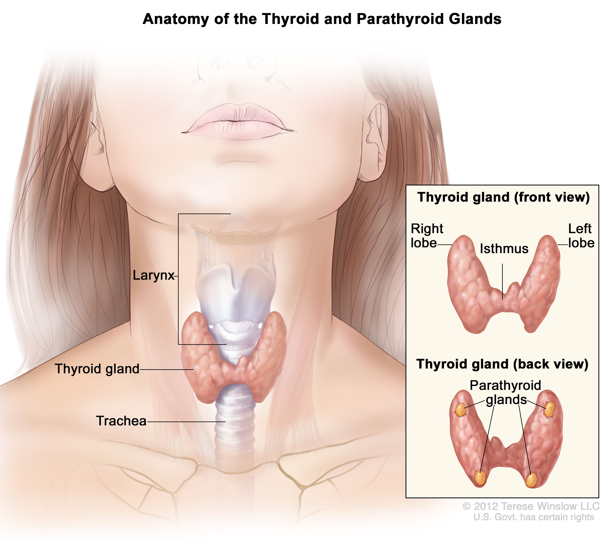
Упомянули слово Schild -- поговорим о нем.
Щит -- (der) Schild [шильд].
Вывеска, табличка -- (das) Schild [шильд].
Вывеска, табличка -- (das) Schild [шильд].
Der Schild и das Schild -- само слово пишется одинаково, но
имеет два значения и два рода. В значении
"щит" -- мужской род, der Schild; в значении "вывеска", "табличка" -- средний род,
das Schild. Откровенно говоря, оба слова ощущаются как одно и то же:
нарисуй на щите герб -- и можно вешать на стену; нарисуй логотип на вывеске -- ну,
смахивает на щит.
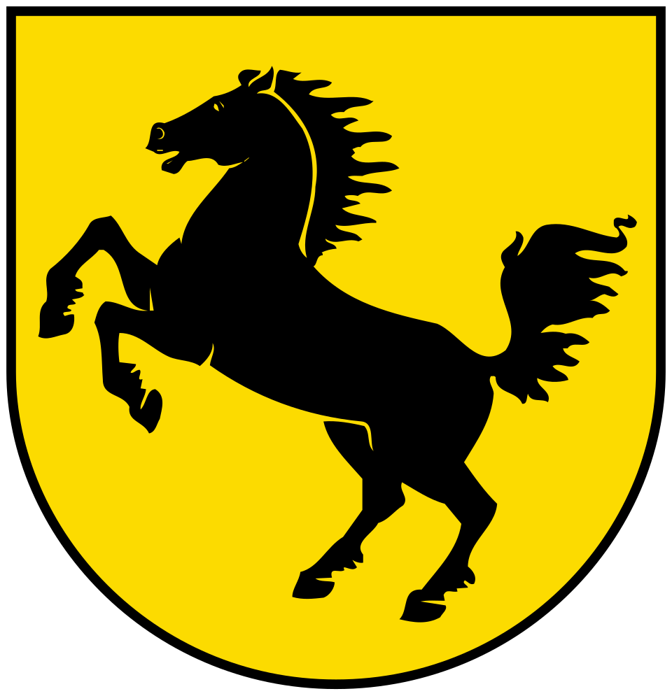
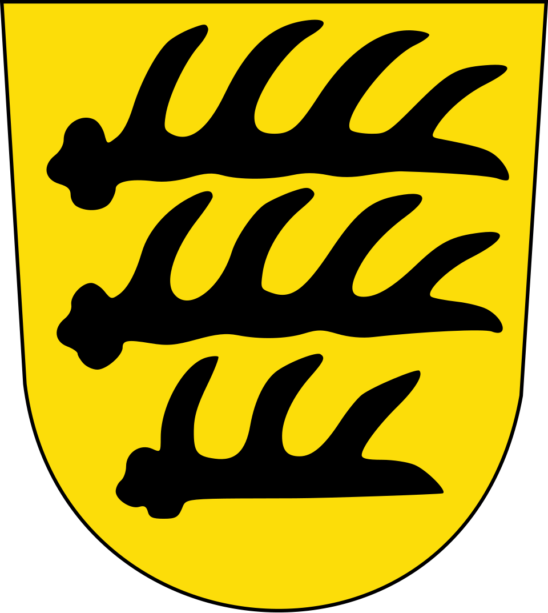
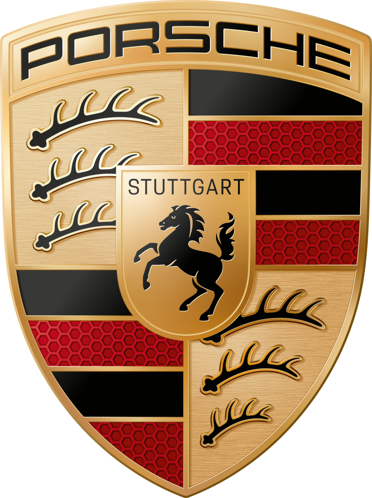
Слева: герб Штутгарта на декоративном изображении щита.
В центре: оленьи рога с герба Вюртемберга на декоративном изображении щита.
Справа: герб Штутгарта на декоративном изображении щита, с подписью "Stuttgart", в окружении двух гербов и красно-черных флагов Вюртемберга, на шильде Porsche, на еще одном декоративном изображении щита, все это с подписью "Porsche".
В центре: оленьи рога с герба Вюртемберга на декоративном изображении щита.
Справа: герб Штутгарта на декоративном изображении щита, с подписью "Stuttgart", в окружении двух гербов и красно-черных флагов Вюртемберга, на шильде Porsche, на еще одном декоративном изображении щита, все это с подписью "Porsche".
Ну и нам "шильдик" хорошо знаком в значении "вывески": каждый в детстве
хоть раз да отламывал шильдик с Мерседеса.
Продолжаем про Schild. Оно взялось из древнегерманского
scilt, "отколотое" (щит когда-то и был просто расколотой доской -- наоткалываются своих щитов и давай друг друга воевать...)
Ну так вот, откуда-то
оттуда же пошло еще два интересных для нас слова, обозначающих
что-то отколотое или там отрезанное.
Во-первых, (der) Schiefer. Изначально наломанный пластинами камень,
что проще всего для сланцевых пород -- таких, знаете, слоистых плиток.
В немецком обозначает именно материал: глинистый сланец.
В XVIII веке пришло в русский как хорошо знакомый нам "шифер"; со временем
стало относиться ко всем волнистым "кровельным" деталям из любого материала (асбест,
битум, пластик, да хоть металл).
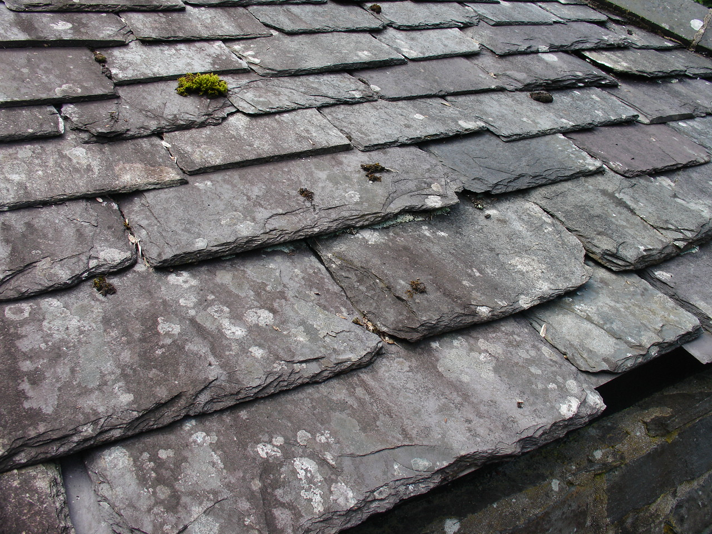
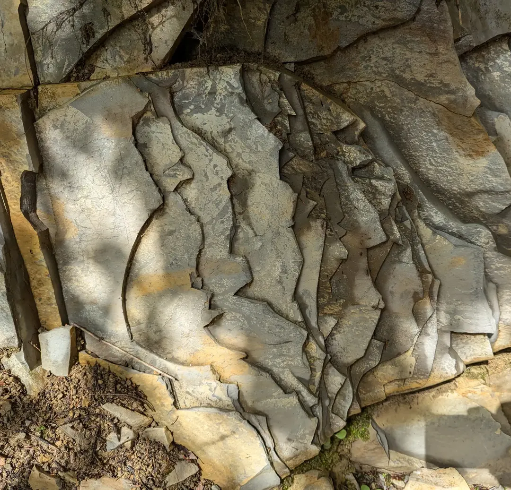
Если говорить не про материал (сланец), а про идею выкладывать
кровлю такими "плиточками" (обычно деревянными), то по-немецки это назвается Schindel -- википедия считает,
что это самый точный перевод "шифера". Не знал, но и в русский
это слово было притащено дословно -- "шиндель", хотя у нас для него был свой вариант: "дранка".
Помогает ли нам это? Мне нет, но если вдруг Вы регулярно заказываете шиндель, производите шиндель,
работаете с шинделем, то теперь знаете, что к чему.
К слову, если Вы производите шиндель, то по немецким стандартам Вы -- (der) Schindler.
Прямо как в фильме "Список Шиндлера" (немцы любят брать профессии в фамилии: у нас Кузнецов, у них Шмидт).
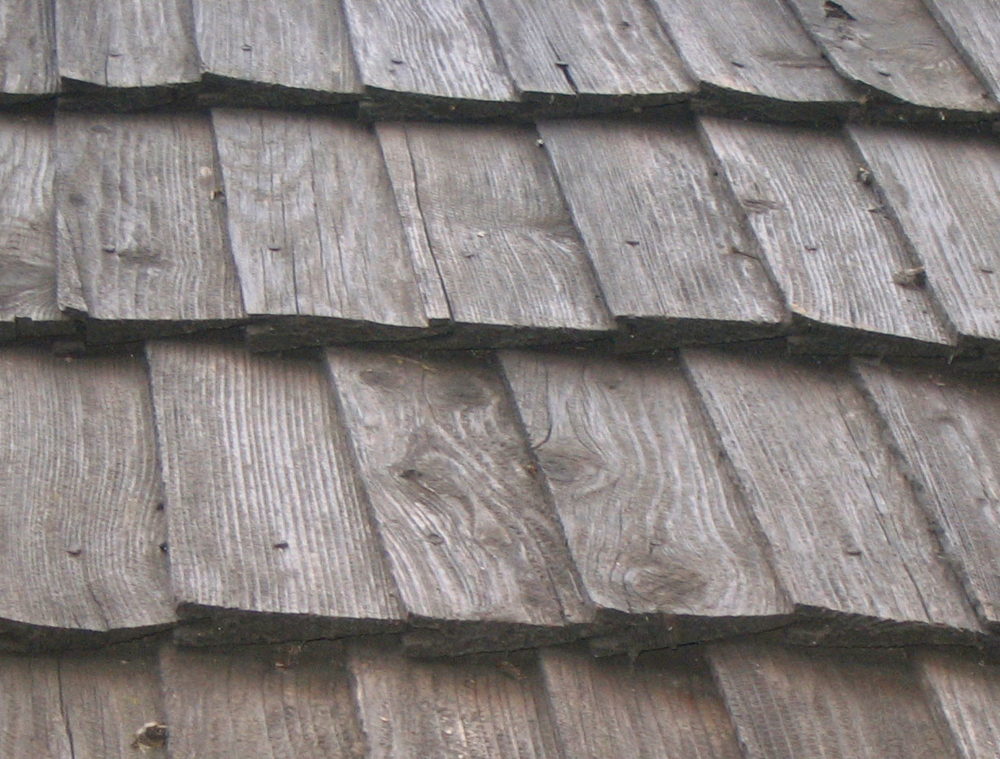
Тот самый шиндель!
Если отрезать не камень или деревяшку, а кусок мяса, то получим
(der) Schnitzel -- шницель. Происходит от абсолютно современного и часто
использующегося (der) Schnitt -- "срез", а оно от schneiden -- "резать".
Основное развлечение маленьких немецких детей на днях рождения друзей -- Schnitzeljagd:
"охота на шницель". Это когда родители прячут вкусняшки где-то
(обычно на природе, в парке там), а дети их ищут. Спортивное ориентирование в миниатюре.
Ни один настоящий шницель при этом обычно не страдает,
истребляются все больше Gummybärchen (Gummi -- резина, bärchen -- медвежата).
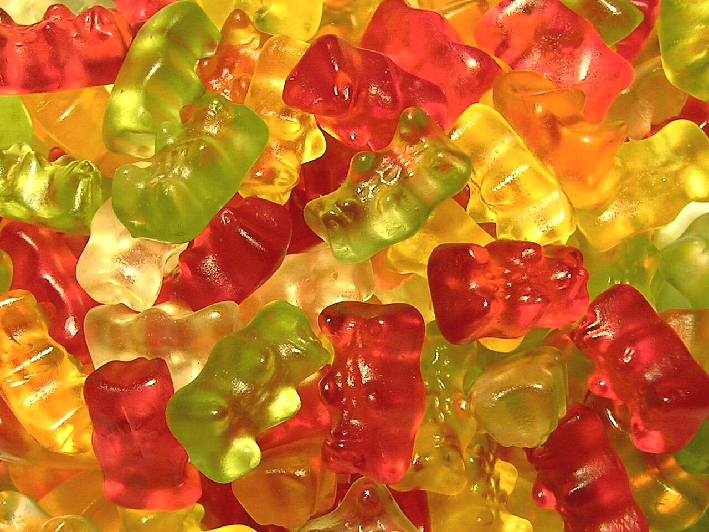
Значит, Schnitzeljagd. (Die) Jagd -- охота. (Der) Jäger -- охотник.
В какой-то момент (этот момент был в XVII-м веке) в вымуштрованной прусской армии
придумали использовать охотников в качестве снайперов, "снимать"
офицеров противника. Назвали их просто: охотники (Jäger). Когда русские
офицеры обратили внимание на эту тактику и решили её перенять, то переняли
и название: егеря́. Впоследствии значение расширилось и стало значить вообще
охотников как профессию, охотников "на службе".
Работников охотничьего хозяйства, так сказать.
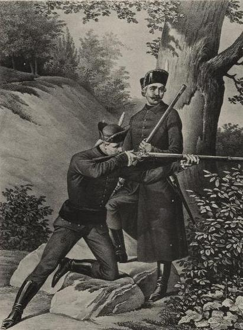
Егеря
Feldjäger -- так вроде бы у немцев называли военную полицию, почему -- не знаю.
Типа, охотится в поле (das Feld) на куропаток, но может и тебя шлепнуть, так что предъявите документики -- логично.
Это тоже было скопировано ("фельдъегерь"), а со временем, наоборот, сузилось:
фельдъегерями стали называть в основном военных курьеров, перевозящих
военные приказы.
Труёвые фельдъегеря древней Руси по мнению искусственного интеллекта
Что в чемодане?..
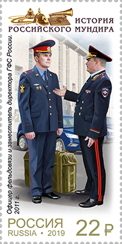
Фельдъегерь здорового человека, или просто мент
Фельдъегерь курильщика
Еще это слово нам знакомо по алкогольному напитку Jägermeister.
Он вышел на рынок в 30-х годах XX века, и есть мнение, что название должно
было быть в духе понятно какого времени и потрафить военизированному немецкому руководству.
По факту главой министерства всякой охоты и прочего сельского хозяйства тогда
был Герман Гёринг, так что, возможно, таким образом создатели пытались задобрить его:
ты мол наш "мастер-охотник"...
Но может и нет.
Опять эта проклятая неопределенность.
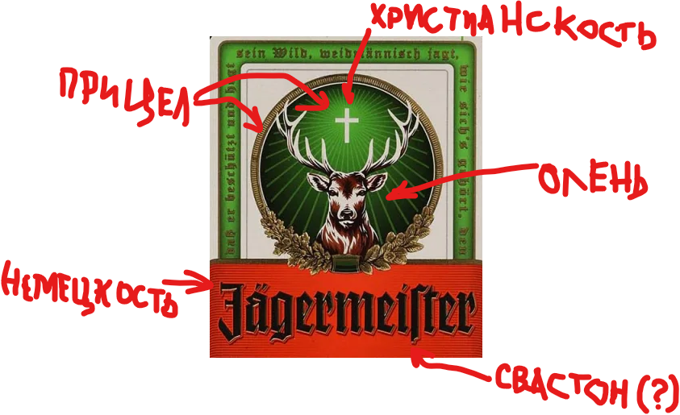
Видеть во сне, сниться -- träumen [тр'оймен].
Слова "дремать" и "träumen" подозрительно похожи. Но на
самом деле не связаны. Но похожи. Но нет. К слову, "дремать" произошло от
латинского dormire, "спать". Спальня в монастырях и всяких общагах
по-английски называется dormitory или сокращенно dorm, как и сама общага.
Снотворное -- Dorm (all rights reserved). Слышишь dorm -- знаешь, что речь
идет про сон. Тем забавнее, что в немецком этот
мощный латинский корень практически не оставил следа: das Dormitorium --
монашеская келья, выходит из употребления. А еще Священной
Римской империей назвались!
Монах -- (der) Mönch [мёнх].
"Монах" и Mönch -- родня с общим греческим
предком μοναχός ("одинокий, уединенный"; от μόνος,
"один"): в русский слово пришло через церковнославянский
напрямую из греческого, а в немецкий -- параллельным импортом
через латынь. Получился один старт в Греции, разные пути,
и почти один и тот же результат что в Твери, что в Мюнхене.
Кстати, про Мюнхен: название города -- привет от того
же Mönch, только во множественном числе. В 1158 году
император Фридрих Барбаросса в одном документе упоминает
место "forum apud Munichen" -- "рынок у монахов": рядом стоял монашеский
двор, принадлежавший монастырю Тегернзее, вокруг которого
и выросло поселение. München буквально значит что-то вроде
"(поселение) у монахов", и на гербе города красуется монах.
В некоторых языках это даже заметнее, чем
в немецком. По латыни город называли Monacum,
он же Monachium. Поляки так до сих пор и говорят:
"монахиум". Итальянцы вообще перевели буквально: Monaco
di Baviera, "монах Баварии" (monaco по-итальянски значит
"монах", но у Монако на Лазурном берегу другое происхождение названия,
там был "одинокий дом").
Чехи зовут Мюнхен Mnichov --
от mnich, того же греческого корня, что и наш "монах".
В общем, всем плевать, как там его называют немцы -- главное, чтобы
были клоуны монахи.
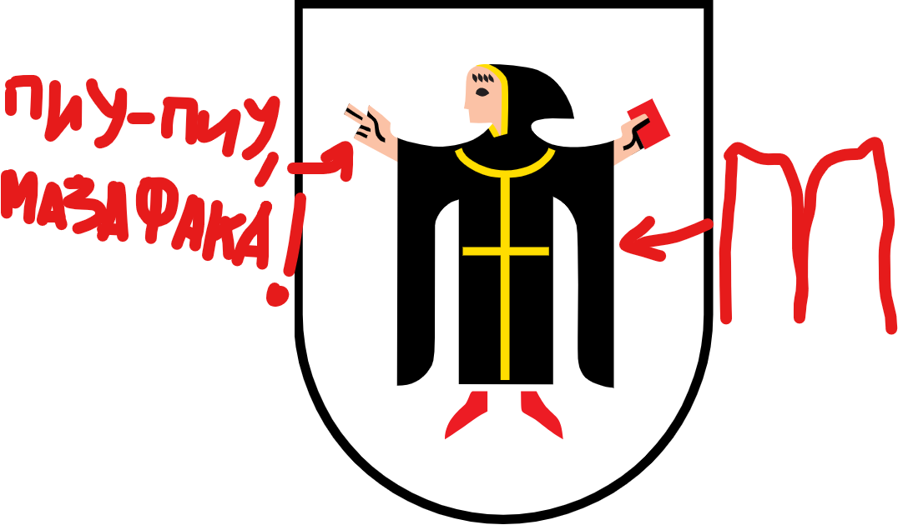
Один -- eins [айнс].
Два -- zwei [цвай].
Три -- drei [драй].
Четыре -- vier [фир].
Пять -- fünf [фюнф].
Шесть -- sechs [зэкс].
Семь -- sieben [з'ибен].
Два -- zwei [цвай].
Три -- drei [драй].
Четыре -- vier [фир].
Пять -- fünf [фюнф].
Шесть -- sechs [зэкс].
Семь -- sieben [з'ибен].
Числительные от одного до десяти -- один из самых
надежных образцов родства в любой паре индоевропейских
языков, и русский с немецким не исключение. "Два" и zwei,
"три" и drei, "четыре" и vier, "пять" и fünf, "шесть"
и sechs, "семь" и sieben -- все это пары, унаследованные
напрямую от общих праиндоевропейских числительных: *dwo-,
*trei-, *kʷetwor-, *penkʷe, *s(w)eks, *septm.
Слова почти не изменились за тысячелетия, разве что
оделись в разные национальные костюмы.
Исключение -- "один" и eins, и оно самое интересное. Eins
-- прямой потомок праиндоевропейского *oi-no-, того же
корня, что в латинском unus и ирландском óen. А вот
славянское "один" -- позднее составное образование,
*edinъ: к уже тогда архаичной, едва ли не забытой форме
на *inъ приклеили усилительную частицу *ed-, что-то вроде
"именно вот этот, тот самый один". Самое любопытное --
обрубок *-inъ внутри "один", возможно, и правда чередуется
с тем же древним *oi-no-, что дало eins и unus: просто
спрятан под славянской надстройкой настолько, что сходство
на глаз уже не разглядеть.
Ноль -- (die) Null [нуль].
Разберём и ноль для полноты картины. "Ноль"/"нуль" и Null --
действительно родня, только не древняя индоевропейская,
а недавняя: оба слова
в конечном счете из латинского nullus, "никакой".
В немецкий nullus попало через итальянское nulla, а в русский --
при Петре I, напрямую из немецкого Null или
голландского nul вместе с прочей арифметикой. Первое
письменное появление слова "нуль" в русском -- в учебных
тетрадях самого Петра, в 1688 году.
Сто -- (das) Hundert [х'ундерт].
"Сто" и Hundert -- родня, и притом настолько прямая и
известная, что на ней держится целая классификация
индоевропейских языков. Оба восходят к праиндоевропейскому
*ḱm̥tóm, "сто": в немецком начальное "ḱ" по закону Раска-Гримма
(того самого Якоба Гримма, одного из двух братьев Гримм)
перешло в "h" (Hund-), а в славянских языках -- в "с" (сто).
Этим-то словом и называют две ветви индоевропейской семьи:
"кентум" -- там, где *ḱ осталось твердым k (как в латинском
centum), и "сатем" -- там, где оно съехало в с/ш (как
в авестийском satem или нашем "сто"). Германские языки --
кентум-ветвь (несмотря на h в Hundert -- оно получилось
уже из k по собственному германскому звуковому закону),
а славянские -- сатем. То есть само слово "сто" -- один
из эталонных примеров, по которому эту классификацию
вообще придумали.
Разница лишь в довеске: немецкое Hundert -- это
протогерманское *hundą (тот самый унаследованный корень)
плюс *-rad, что-то вроде "счет, ряд" -- то есть буквально
"счет сотнями". В русском такого довеска нет: "сто" --
это голый, неукрашенный индоевропейский корень в чистом
виде.
Пару слов про эту тему кентум-сатем и почему это важно.
Рассказываю, как я понял эту тему. Это может быть неправильно
чуть более, чем полностью.
Всяким там языковедам важно, как языки развивались:
общие предки, когда делились на ветки, кто в какой ветке был,
как это связано с реальностью вообще. Например, кто рядом с кем жил,
у тех ожидается большее сходство; и наоборот, у кого большее сходство, тот либо
поближе жил, либо может активно торговал -- короче, интересна история и закономерности
языков этим языковедам.
И вот в какой-то момент языковеды заметили, что некоторые слова в некоторых языках
похожи с точностью до первой согласной: где-то "к", где-то "с". Сто и кентум.
Сердечко и кардио. Знание и гносцере (ср. с "агностик", например). Тысячи их. Причем изменение
во всех таких словах консистентное: в одних языках все переходит в "с", в других в "к".
Поделили языки на две группы.
Это дало следующие возможности: во-первых, языки с одинаковой мутацией ближе друг к другу.
Возможно, имели общего родителя, от которого отпочковалась только эта подгруппа.
Во-вторых, становится понятно, что эти слова действительно родственные, и какой именно
закон объясняет отличие. В-третьих, так и реконструировали, что в праиндоевропейском была
еще одна разновидность звуков, похожих на "к" и "г".
Сначала этой теорией очень вдохновились, рисовали карты с четким разделением
(примерно между западной и восточной Европой), четкие деревья, и т.д. Потом нашли
контрпримеры, которые показали, что представление в виде деревьев -- слишком упрощенное,
что языки могут оказывать друг на друга воздействие и между ветками, и (кажется)
мутации из одной ветки могут догнать язык и в другой. Короче, выводы из красивой простой
теории была опровергнуты, но именно за счет этого люди узнали, как оно на самом деле (ну или
хотя бы ближе к тому, как на самом деле). Назвали это волновой теорией.
В физике частица -- одновременно частица и волна, а в языкознании язык -- одновременно дерево и волна 🧐
Закончим тысячей.
Праиндоевропейцам это число было не нужно: в те времена все было проще, про
тысячи тогда не думали. Поэтому каждый язык придумал себе свою тысячу.
Tausend -- тысяча по-немецки. Упрощая, состоит из двух частей: thus+hund,
где hund -- как в hundert, а thus пришло из праиндоевропейского корня, означавшего распухание,
и дало начало ряду слов, обозначающих его же.
(Der) Daumen (нем.) или thumb (англ.) -- большой палец, распухший так сказать.
Thigh (англ.) -- бедро, то есть "распухшесть ноги". А распухшесть в сотнях -- thousand (англ.) или Tausend (нем.)
В русском слове "тысяча" часть "тыс-" из того же протоиндоевропейского корня, которое "распухшесть",
ну а найти "сто" в "-яча" -- задание для самостоятельной работы читателю (подсказка: это невозможно,
но если искать в "-сяча", то тривиально).
А в латыни и в современном итальянском своя "тысяча": mille. И она дала рождение
миллиону слов типа "миллиметр", "миллиграмм" и т.п.
Ну, я так слышал.
За что купил, за то продаю.
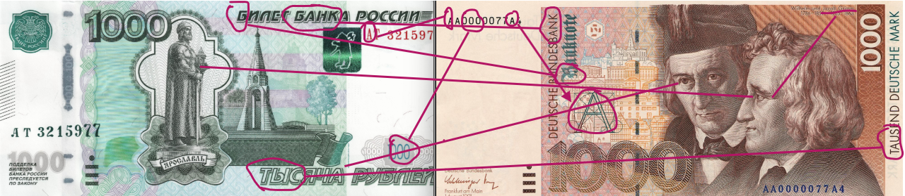